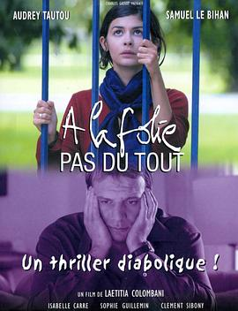
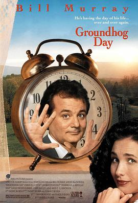
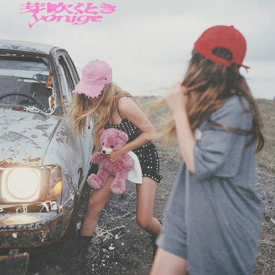
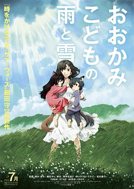
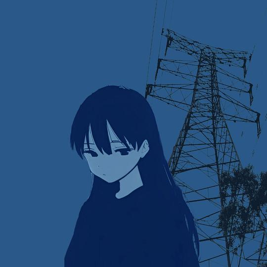
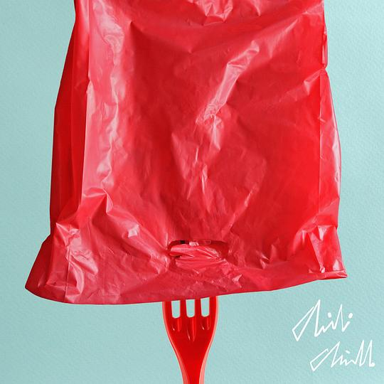
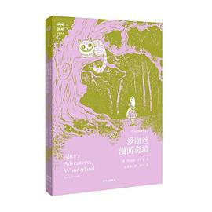
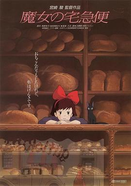

2026年7月
广播发布后不可编辑，所以每条都是那一刻的原话。
2026-07-31 23:25:08

《浮生一戏》粉色的表白。虽然女主的所作所为不能理解，但故事的一步一步揭露拍得是真不错，前半个小时的春秋笔法好酣畅。经过几番周折后原配仍然相伴，说明他们才是纯爱呀！《L-O-V-E》这首歌目前在《天生一对》与《摇摆少女》都听到过了。
2026-07-31 21:36:34
说
最喜欢的还是《蜘蛛侠：崭新之日》。😋😋😋。
2026-07-30 22:30:20
看过 我是你爸爸 ★★★☆☆
朔爷，这拍电影到底不是写小说，不能章回体似的有一茬没一出地想拍什么就什么，剧情不好说，老以为有隐喻，印象最深的就是那句“反正没有李自成”。不过小演员演得还蛮好的，长得也和冯老师比较像。最值得说道的居然是光影，过曝与把婚礼拍得和葬礼一样都教人眼前一亮。
2026-07-30 16:17:51
看过 蜘蛛侠：崭新之日 / Spider-Man: Brand New Day ★★★★☆
故事依旧老套路，帮忙结果闯祸后弥补最后成长。但与MJ的感情线处理得很好，再旧情复燃真真庸俗，况且MJ也会在道德上出了轨。视效非常好，尤其那荡蛛丝的第一视角果然只能在大银幕上享受啊。最后结束的空镜拍得蛮好看的，梅姨也好好看。
2026-07-29 23:34:03

编剧是善良且温柔的，留了那最美好的一天给了菲尔当作开始，但保险全买了的话钱包可能有些痛哦。其实那完美的一天单拎出来其实真的是个很浪漫的爱情故事了，躺在雪地里双方瞧着对方的目光真真好浪漫的，可毕竟这样的爱情就是以万万分之一的概率为前提的，因而不断地试错反而对女主不公平，不过这样也给了男主认识与熟悉女主的机会了。路人的一句“但我每天都在过这样的日子啊”才道破了现实意义的土拨鼠之日，不过电影里的这番果真还蛮诱人的，不死不灭仿若永生。
2026-07-29 16:05:26
看过 狙击手 ★★★★☆
本来在纠结标题的入场太突兀时，干净利落的重点戏剧开场却瞬间牢牢抓住我。无论前半的多对多还是最后的一对一斡旋戏，戏剧张力都怕得蛮不错的。雄起得这幕戏还蛮好哭的。望远镜就是一种传承呀。就是那种子弹时间可不可以少一点呢。
2026-07-28 14:56:21
看过 超级少女 / Supergirl ★★☆☆☆
片名说《超级少女》，可是拍得既不超级也不少女。内容上节奏拖沓，剪辑十分混乱，动作设计几乎等于没有，就连超级英雄最过瘾的视效方面也并不出色。我又为何要浪费这个时间看这部电影呢。外星狗吃巧克力也会死么原来。超人外穿内裤果然谁看了都会吐槽一句吧。
2026-07-28 06:57:15
关注片单 细数日本动画里的迷影情结与彩蛋
2026-07-27 22:26:02
看过 金特务：本色回归 / 김부장 ★★★☆☆
质感是韩国的网大，只是没想到本以为单纯救女儿的叙事里还穿插了其他故事线。对北边拍得也太野蛮了吧，政治倾向好明显。最后是hp，真好。
2026-07-22 15:26:40
看过 导火线 / 導火綫 ★★★★☆
动作设计真是爽翻天，真多了好些搏击招式，一拳一踢都看得清清楚楚。兆龙有点小帅哦。能在一个半小时内讲完一个故事的都是好电影呀。(⌒▽⌒)
2026-07-21 21:16:27
看过 群星闪耀时 ★★★★☆
视效优秀并且剧本出色，同时演技在线，这已经是一部很可贵的电影了。人民史观贯穿始终，无论从开头阴差阳就的营救还是接下来还剩心率表征的救援，或者说七十年代就算不见后人也义无反顾地无论室内会计和数学老师的计算还是室外工农子弟兵险恶的维护工作，都是具像化的体现。最后黄大叔的悬念留下让我很惊喜，我如今无比喜欢happyend了。
2026-07-21 17:39:48
在看 少年派2 ★★★☆☆
陪老妈看的第二部，第一部也是老妈先看我后追起来的。喜欢可爱的林妙妙与憨憨的爱而不得的天昊。
2026-07-21 10:01:48
在读 铃芽之旅 ★★★★☆
加多宝送我的书，至今才拿出来读，目的是为了在重看电影时能有更深的理解。但诚哥你写小说你能不能好好写呢，何必弄一些不在正文里的小标题或者分隔符呢。本职导演的人来写小说，在这个时代有了一个更恰当的描述，他们就是在照着他们脑子里的画面写提示词嘛！
2026-07-20 22:55:02
看过 辣妹刺客3 / ベイビーわるきゅーれ ナイスデイズ ★★★★☆
最后的1v1看了绝对不亏。圆村的械斗与狭小空间的动作设计都蛮好的，就是摸摸拳太黏糊因此观感不太好。壮壮演得好用力哦。才发现每一部最后都会回收开头的动作哦。最后的小孩是何意味呢。
2026-07-20 16:46:14
看过 辣妹刺客2 / ベイビーわるきゅーれ 2ベイビー ★★★☆☆
摸摸拳巅峰就是玩偶打架那一段。意外对《花束般的恋爱》的吐槽与gakko！的客串。小陆的武戏也太菜了吧。喜欢女孩子之间的碎碎念。喜欢黄毛小姐的虎牙。苏打真真帅到爆炸哦。
2026-07-20 14:46:45
看过 辣妹刺客 / ベイビーわるきゅーれ ★★★☆☆
一部好聒噪的电影。只有动作戏码出现时才可看了起来，圆村这时候就开始研究他的摸摸拳了么。一段吃关东煮的固定长镜头与一段拐人的长镜头蛮不错的，最后的1v1的快拳也很好。一个半小时竟仍觉得拖沓。
2026-07-18 18:45:43
看过 八仙！ ★★★★☆
剧情意外地没有拖后腿，一环扣一环，画面的设计与镜头的语言也非常优秀。故事不能有太多点评，否则没看过的人会被打破惊喜的。cue了一下张麻子真是笑嘻我了。最后神仙与凡人总该来点暗喻与讽刺，否则真说不过去的。
2026-07-17 17:46:56
看过 流浪地球2：再次冒险 ★★★★☆
拍得很真诚，最后的发问都是用爱发电呀。
2026-07-15 19:59:17

拿到手的是期间生产限定盘初回版，立马把第三轨与第四轨溜了好几遍。
2026-07-15 16:13:46
看过 万事顺利 / 万事快調〈オール・グリーンズ〉 ★★★★☆
一部很有态度的青春犯罪电影呀，结尾大家本为未来迷茫苦恼之时却意外地在毕业典礼上牵手欢舞，真是讽刺呀。喜欢“电影就是为大银幕而诞生的”的这话，也喜欢随时随地邀请他人看电影的断指小姐。小县城里自己唯一的避难所也因为勾连成人的灾难而破败，也难怪短发妹会哭泣了。三百万直接给母亲拽回了现实，有点小惊讶。结尾很意外。片名与出片名的方式都很特别，绿色在电影里一贯始终，好养眼。电影小姐旗帜鲜明地反对AI电影，这也好有态度哦。
2026-07-13 18:16:44
在看 金特务：本色回归 / 김부장 ★★★☆☆
质感是韩国的网大，只是没想到本以为单纯救女儿的叙事里还穿插了其他故事线。对北边拍得也太野蛮了吧。
2026-07-12 16:36:22

从头至尾我看见了本来会成为高知的大学生突然肆业去乡下终日避人只为养育其中一位还差点让自己在雨天送命的孩子。俩孩子一个当人一个当狼，却都是无论人类社会还是原始社会驯化之后的结果。喜欢母亲种地时乡亲们的帮助，人嘛果然还是社会关系的总和。上学时的姐弟两蒙太奇不错。雨这小子小时候长得真像rei呀，一看人设果真是贞本。
2026-07-11 23:09:30

喜欢同名曲中间的变速。
2026-07-05 17:22:25
在看 无职转生Ⅱ 到了异世界就拿出真本事 Part 2 / 無職転生Ⅱ ～異世界行ったら本気だす～ 第2クール ★★★★☆
草草的作画导致看点就只有故事了。咋开头面对过多少大是大非的鲁迪能被一个木偶吓成那样呢。
2026-07-04 22:47:29
看过 红猪 / 紅の豚 ★★★★★
我很喜欢这部篇幅不长节奏恰好的传奇故事，就比如最后那位美国人说的他很怀念那年夏天的经历。有三处地方让我大呼震惊，第一是猪大叔在电话里说不会飞的猪是没用的猪；第二是造飞艇时的妇女能顶半边天；第三是猪大叔讲故事里的天空原来不是银河碎带，那些白点而是逝去一条条飞艇与其的飞行员。故事背景反战深刻但不直白，就是通过人物字里行间的对话徐徐展现出来的。而每个人物都有其独特的魅力，令人由衷欢喜。合影时贼大叔不讲武德笑坏我了。后装的发动机竟然是吉卜力牌的么！
2026-07-03 00:06:56

这时候的编曲还很简单。喜欢《入秋第一场雨》。于老师的那首《少男》在这张专辑里真是点睛之笔了。
2026-07-03 00:06:35
看过 上伊那牡丹，醉姿如百合 / 上伊那ぼたん、酔へる姿は百合の花 ★★★★☆
摄影太恐怖，连人物入镜时焦点从背景上的转换都很自然。配乐蛮好听的。社长的声音总让我幻视onimai。op的演出太精彩，深居我心了。上大学开始学抽烟喝酒，也是很有前途了。ep3演出很精彩啊，只是这一人原动画能给作监修脸修吐了吧。_(¦3」∠)_。ep4分镜看出来很有想法哦。ep5演出炫得真是厉害。ep7分镜很有意思，每每听见bgm都觉动听。人物贴贴的动机都太生硬了。ep8角色互动得有些拧巴了，只是三首插曲配上慌慌的霓虹很悦耳。ep9节奏有大问题，台词编排得不好。糟糕！ep10学姐面朝大海的转场深居我心。结尾cue了一下春树真是逗笑我了。ep11学姐可不可以不要在室内抽烟呢。ep12处处都在针对学姐，ed里也是。整体是部只要抛开对剧情走向的思考便会观感很不错的番剧，作画与音乐绝对值得一赏。
2026-07-02 20:30:21

导语讲得蛮好，主要是插画加大分。(o^^o)。首刷的卷首诗有个错别字，“一同在坚持”应为“一同再坚持”。整体故事真真是一场瑰丽的童话，喜欢。
2026-07-02 16:38:34
听过 禁止不通行 ★★★★☆
第一首的编曲好爵哦。喜欢对《少男》的翻唱。
2026-07-02 16:37:49
听过 失宠儿 - Single ★★★☆☆
编曲纯纯摆烂了。
2026-07-02 16:26:53

在异乡能获得如此多的善意，是我我也哭。好多人都有着爽朗的笑声，尤其老板娘的会让人觉得这世间哪有过不去的坎。金田大师的原画真是精彩。这样一个简单的成长故事看得人心暖暖的。只是好端端琪琪怎么就听不懂吉吉讲话了呢。
2026-07-01 20:01:45
读过 文学少女 爱恋插话集 02 ★★★★☆
还是可惜琴吹小姐的爱情啊。震惊首页彩图的泳装。依旧为琴吹打抱不平啊。